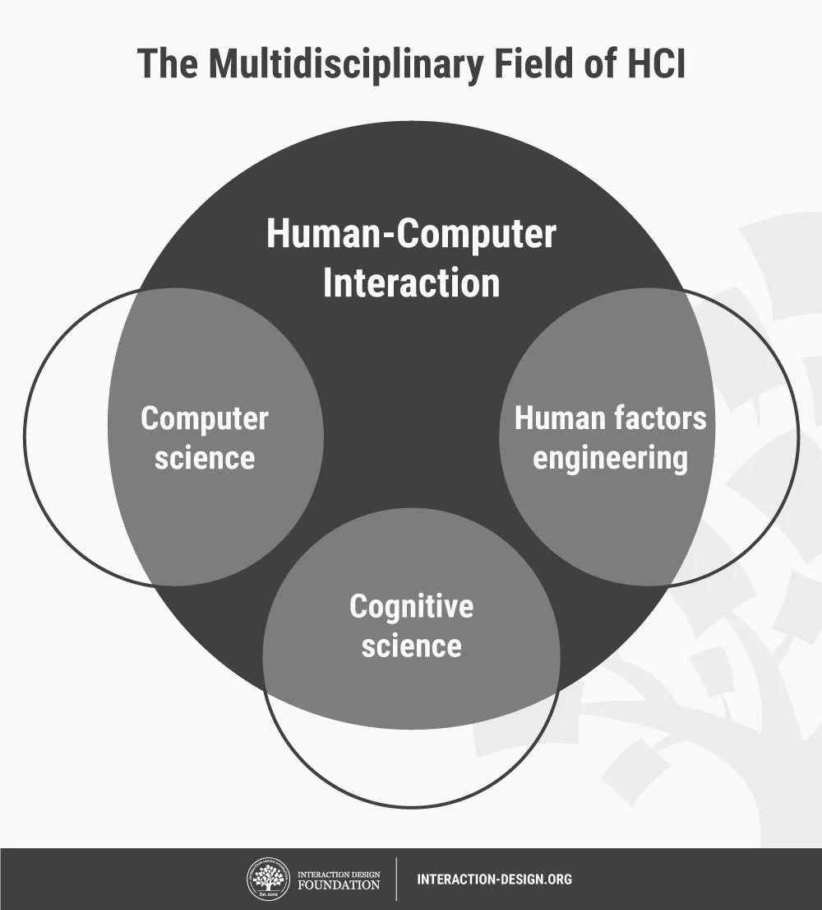

Recurso 2: Interaccion Humano Computador
Inicio
Inicio
Index
Temas
Fundamentos de HTML
Interacción Humano Computador
Recursos
Recurso: Fundamentos de HTML
Recurso: Interacción Humano Computador
Aprendizaje
Aprendizaje 1
Aprendizaje 2
Acerca de
Audio Interacción Humano Computador

El navegador no soporta archivos de audio.
Video sobre Interacción Humano Computador